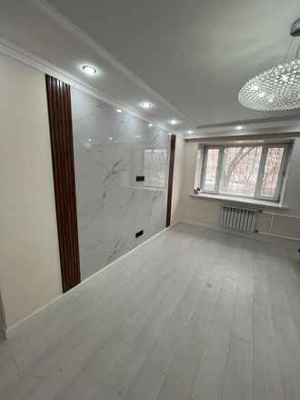
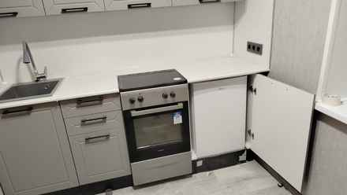
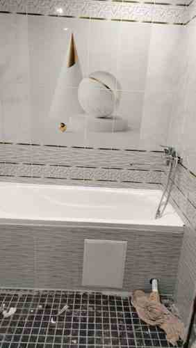
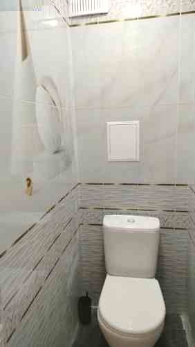

Комплексный ремонт
Ремонт квартиры целиком или большого согласованного этапа с общей последовательностью работ.
Электрика, сантехника, плитка, полы, двери, малярные и плотницкие работы, сборка мебели и комплексный ремонт.
Главная особенность — широкий набор навыков в одном мастере. Работы согласуются между собой по порядку, размерам, уровням и дальнейшей отделке.
Ремонт квартиры целиком или большого согласованного этапа с общей последовательностью работ.
Электромонтажные работы в рамках ремонта квартиры.
Сантехнические работы с учётом дальнейшей отделки и расположения оборудования.
Подготовка, укладка плитки и аккуратное сопряжение этапов.
Стяжка пола, укладка ламината и установка дверей.
Подготовка и финишная отделка стен и поверхностей.
Плотницкие задачи в квартире и при отделке.
Сборка мебели и кухонных гарнитуров. Объём и сложность обсуждаются заранее.

Электрика влияет на отделку, сантехника — на плитку, уровни полов — на двери и примыкания. Когда всё это видит один мастер, проще заранее состыковать работы и избежать ненужных переделок.
То есть клиент получает не набор разрозненных исполнителей, а одного мастера, который отвечает за согласованный результат.
Не беру одновременно несколько ремонтов и не разбегаюсь между объектами. Если берусь за заказ — занимаюсь им последовательно до завершения согласованного этапа.
Клиент понимает, кто отвечает за работу и как движется ремонт.
Не нужно на каждый этап отдельно искать нового исполнителя и заново объяснять особенности объекта.
Материалы, технологии и последовательность работ оцениваются с учётом всего объекта, а не одной операции.
Можно оценить проблему, исправить отдельные ошибки или довести незаконченный ремонт до нормального состояния.
Реальные фотографии предоставленных работ — без стоковых интерьеров.





До начала ремонта согласовываем задачу, материалы, последовательность и стоимость.
Сборка мебели — от отдельных предметов до готовых мебельных комплектов. Объём и сложность работ обсуждаются заранее.
Да. Можно обсудить отдельные ремонтные работы: сантехнику, электрику, плитку, полы, двери, малярные, плотницкие и другие задачи из списка услуг.
Стоимость рассчитывается индивидуально после оценки объёма и сложности работ. Перед началом обсуждаем объём, последовательность и стоимость.
Да. Сначала оценивается проблема, затем обсуждается, что именно целесообразно исправить или переделать.
Нет. Это сайт частного мастера-универсала. Основная идея — один мастер видит весь объект целиком и отвечает за согласованный комплекс работ.
Здесь будут публиковаться только реальные отзывы клиентов. Напишите отзыв — он откроется как готовое сообщение для отправки Володе во ВКонтакте. После подтверждения его можно разместить на сайте.
Можно позвонить или отправить сообщение во ВКонтакте. Если есть фотографии объекта — приложите их к сообщению.
Телефон+7 912 902-35-30 ВКонтактеvk.ru/id1084594994Можно обсудить как отдельные работы, так и комплексный ремонт: электрика, сантехника, плитка, стяжка пола, ламинат, двери, малярные и плотницкие работы, сборка готовой мебели.
Главное преимущество мастера-универсала — общий взгляд на квартиру. Электрика, сантехника, полы, плитка, двери и финишная отделка согласуются между собой, а за результат отвечает один человек.